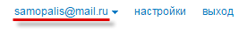
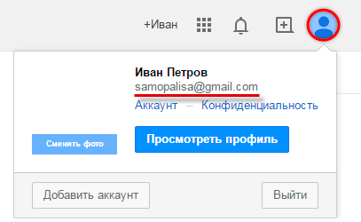

Адрес электронной почты
У каждого ящика в интернете есть свой адрес (email). Без него просто-напросто невозможно было бы пользоваться почтой. То есть если человек отправляет и получает письма по интернету, значит, адрес у него есть.
Название ящика у каждого свое – единственное и неповторимое. Поменять его нельзя, можно только зарегистрировать новый ящик с новым именем.
Это как, например, номер мобильного телефона. Какой уж назначили, такой и есть. Поменять его нельзя, можно только получить новый.
Адрес электронной почты может состоять только из английских букв, цифр и некоторых знаков (точка, дефис, нижнее подчеркивание). Никаких русских букв!
Также в его состав входит символ @ (читается он как «собака»). На клавиатуре компьютера этот знак находится там, где клавиша с цифрой 2. Чтобы его напечатать, нужно переключить клавиатуру на английский язык, нажать клавишу Shift и, не отпуская ее, нажать на клавишу с цифрой 2.
Подытожим:
Адрес электронной почты (e-mail) — это уникальное название ящика в интернете. В его состав обязательно входит символ @ . Назначается адрес при регистрации почты.
Получается следующее. Когда мы создавали себе почту в интернете, было назначено уникальное название для нее. Теперь туда и приходят письма.
Как узнать
Начнем с того, как формируются названия электронных ящиков. Когда человек хочет завести в интернете личный e-mail, он идет на какой-нибудь почтовый сайт: Яндекс, Gmail, Mail, Рамблер или другой.
Потом он проходит регистрацию. Это что-то вроде анкеты, которую необходимо заполнить – без нее почту не дадут. Так вот в этой самой анкете есть поле логин и пароль. Как мы разбирались ранее, логин – это имя в почтовой системе, а пароль – ключ, которым это имя будет открываться.
Вот этот самый логин – это и есть ключевая часть в названии Вашего ящика.
Сразу за ним следует значок @ . А уж после него идет название того почтового сайта, на котором Вы заводили себе ящик.

Например, я зарегистрировал email на Яндексе. Логин — это то, чем я его буду открывать. Он у меня такой: samopalis. Значит, название моего ящика: samopalis + @ + yandex.ru
Ни знака плюс, ни даже пробела быть не должно. Значит, мой адрес электронной почты следующий: samopalis@yandex.ru
Вот это название я и должен сказать или написать человеку, чтобы получить от него письмо.
Каждый адрес электронной почты в интернете уникален. Второго такого же быть не может!
Но есть некоторые особенности в почтовых системах, из-за чего частенько возникает путаница. Вот об этом я хочу рассказать подробнее.
Яндекс Почта
Когда Вы заводите себе имя в этой системе, Вам дается уникальный логин плюс часть @yandex.ru
Но это еще не все. Дополнительно к каждому логину даются «прибавки» следующего вида: @ya.ru, @yandex.com, @yandex.by, @yandex.ua, @yandex.kz
То есть Вы можете дать кому-то свой email в любом из этих форматов, и если человек напишет на него письмо, то оно безо всяких проблем попадет прямо в Вашу почту.
Таким образом, если у меня название samopalis@yandex.ru, я спокойно могу написать на визитке samopalis@ya.ru или любой другой из вариантов — письмо все равно придет ко мне.
Но и это еще не все! Также в качестве логина можно использовать свой номер мобильного телефона. Естественно, с приставкой @yandex.ru или любой другой (@ya.ru, @yandex.com и т.д.). Подробнее об этом можно узнать по ссылке.
Mail.ru
При получении ящика на сайте mail.ru предлагается выбрать имя для него с любым из окончаний: @mail.ru, @list.ru, @bk.ru, @inbox.ru.
Но это вовсе не означает, что Вы можете пользоваться ими всеми. Наоборот имя будет работать только с одной, указанной при регистрации приставкой.
Это означает, что если Вы зарегистрировали себе логин ivan с приставкой @bk.ru, то войти в свою почту можно будет только с этим окончанием и ни с каким другим. Со стандартным @mail.ru почта просто-напросто не откроется.
Более того, если кто-то отправит Вам письмо НЕ на адрес ivan@bk.ru, а на адрес ivan@mail.ru, Вы его не получите. В лучшем случае письмо никуда не отправится, а в худшем оно попадет к другому человеку, у которого точно такой же логин, но с другой приставкой.
Например, при регистрации почты я хотел себе выбрать имя neumeka@mail.ru, но оказалось, что оно уже занято. Пришлось выбирать с другой приставкой. Если вдруг мне кто-то захочет написать письмо на адрес neumeka@mail.ru, то оно придет не мне, а к другому человеку.
Где написан email
Свой email можно узнать прямо внутри ящика. Кстати, он также автоматически вставляется в каждое письмо, которое Вы отправляете.
В Яндекс.Почте адрес своей электронной почты можно узнать, посмотрев в правый верхний угол ящика:
В почте на Mail.ru он также написан вверху справа:
В ящике на Gmail нужно нажать на кружочек с человечком (или свою иконку/фотографию) в верхнем правом углу:
